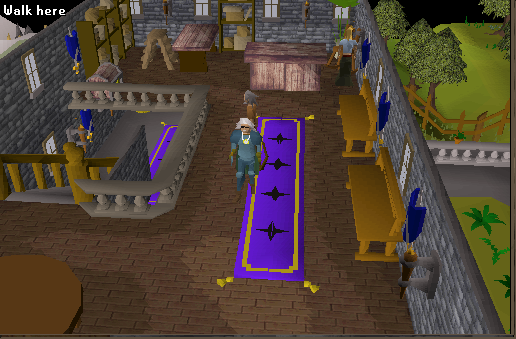

Champions' Guild
Requirements: To Enter the Champion's Guild, you need 32 Quest Points.Location: South West of Varrock
This picture here is the bottom floor of the Champion's Guild.

Here is an explanation on what is in the bottom floor:
To the left of the handsome man, the one with white hair, is the Guild Master who greets you when you enter the Champion's Guild. You can also talk to him about starting the Dragon Slayer Quest.
To the left of the Guild Master is a door, which leads to a smaller room that has a range in it.
To the left and behind the Guild Master are the stairs that will take you to the Upper Level.
The door at the bottom of the Picture (it is cut off) is where the Chicken Coop is - that is the main reason there is a range. So you can kill chickens then cook the meat and do whatever you want with the Cooked or Burnt meat.
To the Right of the handsome man is the door in which you can either Enter or Exit the Champion's Guild.
This is the Upper Level of the Champion's Guild. Here is an explanation of what is here:

Behind the handsome man is Scavvo, who sells Rune items and a few Dragon Hide items.
In the back of the Champion's Guild is camera shy Valaine (you can see how she tried to blend in with the Background). She sells a few different armours and you can sell your items to her.
This is Scavvo's Shop.

I'll list the items he is selling from left to right:
Rune Skirt - 64000gp
Rune Legs - 64000gp
Rune Mace - 14400gp
Rune Chain - 51000gp
Rune Long - 32000gp
Rune Sword - 20800gp
Dragonhide Chaps - 3900gp
Dragon Vambraces - 2500gp
Coif - 200gp

As I did with Scavvo's Shop, I'll list these items from left to right:
Blue Cape - 41gp
Black Large - 1372gp (The price doubles in General stores.)
Black Legs - 2496gp
Addy Plate - 16640gp
This Guild guide was written by Stone Burner and NightmareX9. Thanks to smeagol979, imeanpeace4, and DRAVAN for corrections.
This Guild guide was entered into the database on Wed, Apr 14, 2004, at 06:08:44 PM by Freakybat and was last updated on Mon, Jun 13, 2005, at 01:21:36 PM by Lewt04.